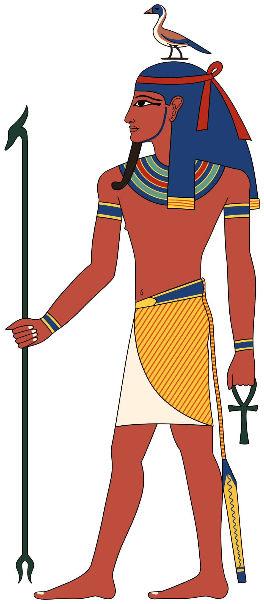

Кто такой Геб
Геб — олицетворение земли: сын Шу (воздуха) и Тефнут (влага), брат-супруг Нут. Небо и землю обнял отец-воздух и раздвинул: Шу встал между ними, Нут выгнулась дугой, Геб лежит плашмя — это и есть космос египтян. В храмах сцены «разделения Нут и Геба» — один из главных образов сотворения мира (на потолках Дендеры, в «Книге дыша»?).
Геб — «принц змей» (в «Текстах пирамид»: змеи — «дети Геба»): он — подпочва, из которой ползёт всё ползучее, и одновременно — «чёрная земля» плодородия: «влага Геба» — грунтовая вода и урожай; царь наследует трон «как Геб — после Шу»: власть фараона — продолжение космического порядка поколений богов.
Мифы
Геб — отец четвёрки великих: Осирис, Исида, Сет, Нефтида (плюс старший Гор) — то есть прадед-основатель всей «осирической» драмы. В «Тяжбе Гора и Сета» (папирус Честер-Бити) Геб — верховный судья девятки: после долгих препирательств он передаёт трон Гору, произнося формулу «Гор — владыка земли» — и этим мифом легитимирована всякая царская власть: каждый фараон — Гор, получивший землю по приговору Геба. В другой сцене Геб посылает соколов принести «зелёное лекарство» для больного Ра — бог земли лечит небо.
Его «хохот» — землетрясение: «когда Геб смеётся, трясётся дом живых и дом мёртвых» — тексты пугают этим в папирусах Дуата (стража «хохочущего»?? — врата с именем «тот, кто хохочет»?). Восточный Нил сейсмичен: сильнейшие исторические землетрясения сотрясали Фивы — и «смех земли» был реальной угрозой, объяснённой мифом.
Иконография и гусь
Геб — человек с гусем на голове (гусь — его птица и эмблема) либо с рогатой головой? (в «Книге дыша»?) — реже; часто — лежащий под Нут, с эрекцией? — нет: в «космических» сценах — мужчина под дугой женщины-неба. В «Текстах пирамид» царь «восходит как гусь Геба»: великий гусь, снесший «первозданное яйцо» — мир (по гермопольскому мотиву). Гусь Геба — птица-вестник в заупокойных сценах; «скручивание шеи гусю» — жест очищения в обрядах (сцены в гробницах); отсюда и выражение «скрутить шею гусю» — «получить наследство».